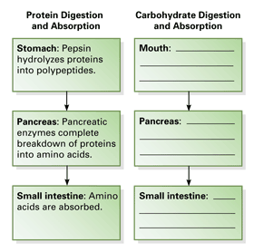

Reviewing Concepts
Multiple Choice
Choose the letter of the best answer.
1. Proteins in food such as cheese provide the body with which monomers?
a. monosaccharides
b. amino acids
c. fatty acids
d. water molecules
2. Which list of the stages of food processing follows in the same order in which they happen in the body?
a. ingestion, absorption, digestion
b. absorption, elimination, ingestion
c. digestion, absorption, elimination
d. ingestion, elimination, digestion
3. Chemical digestion of starches begins in the
a. mouth.
b. liver.
c. large intestine.
d. pancreas.
4. The epithelial layer of the stomach is protected from self-digestion by a layer of
a. acid.
b. mucus.
c. skin.
d. cilia.
5. The role of the liver in digestion is to
a. store bile.
b. manufacture pepsin.
c. manufacture bile.
d. reabsorb water.
6. Which of the following are essential nutrients?
a. essential amino acids
b. essential fatty acids
c. sodium, calcium, and iron
d. all of the above
7. How are ingredients listed on Nutrition Facts labels?
a. by fat content
b. alphabetically
c. by abundance in the food
d. in the order that they are mixed
Short Answer
8. Describe the results of digesting carbohydrates, proteins, and fats.
9. Describe the function of the epiglottis.
10. Explain how persistalsis moves food along the alimentary canal.
11. Explain what roles the stomach plays in mechanical and chemical digestion.
12. How does heartburn occur?
13. How does the structure of the small intestine match its function?
14. Explain the relationship between Calories ingested, Calories burned, and changes in weight.
15. Why are certain amino acids considered essential amino acids?
16. What is an eating disorder? Give at least one example.
Visualizing Concepts
17. Follow the example in the completed protein flowchart to finish the similar flowchart for carbohydrates. Next, construct your own flowchart describing the digestion and absorption of fats.

Applying Concepts
Analyzing Information
18. Analyzing Data Use this Nutrition Facts label to answer the questions below.

a. What percentage of the total Calories in this product is from fat?
b. Based on the grams of saturated fat and its % Daily Value, calculate the upper limit of saturated fat that a person should consume daily.
c. Is this product an overall good source of vitamin A and calcium? Explain your answer.
19. Analyzing Diagrams Use the diagram of a villus to answer the questions.

a. Which digestive system organ contains villi?
b. What is the structure labeled a? What is its function?
c. What is the structure labeled b? What is its function?
Critical Thinking
20. Evaluating Promotional Claims A snack food's packaging advertises that it is now fortified with calcium and iron. How can you decide if this product is a healthy food choice?
21. Relating Cause and Effect Describe at least one possible effect of a diet lacking in one of the nine essential amino acids.
22. Developing Hypotheses Suppose a person's body does not absorb enough nutrients even though she eats a healthy, balanced diet. What might be a possible cause of such a condition? Explain.
23. What's Wrong With These Statements?
Briefly explain why each statement is inaccurate or misleading.
a. Digestion is completed in the large intestine.
b. You cannot drink water while standing on your head.
c. Polysaccharide digestion occurs in the liver.
d. Your cells can manufacture vitamin K.
e. Malnourished people are always underweight.
Performance Assessment
Biology Research Project Research the condition caused by childhood vitamin D deficiency called rickets. What are the signs and symptoms of rickets? What researchers were involved in determining the cause of rickets? How did these researchers build off the discoveries of each other to determine the cause of rickets and how to prevent it?